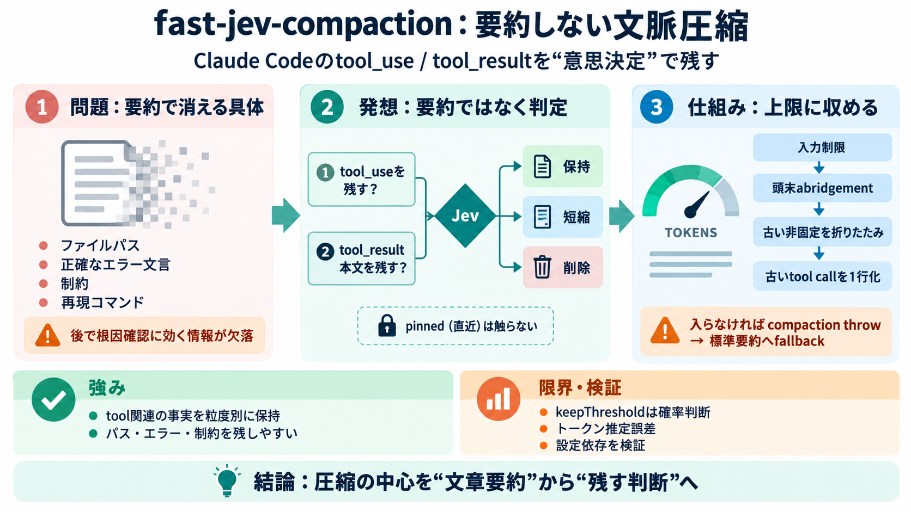

Claude Code Must-Haves - January 2026 - DEV Community
First version of a skill or hook is good. After 2-3 iterations, it's typically much better. Don't expect perfection on d…

tool_use / tool_result のみ（ユーザ/アシスタント文章は原文維持）
「残すべきか」と「結果本文を残すべきか」を分けて評価し、不要だけ削除/短縮
エラーの正確な行・文言／パス／制約／再現に必要なコマンド
テスト失敗の根因確認や、次のツール実行で参照すべき具体が欠落する
tool_use 自体を残すかを評価
tool_result 本文をそのまま残すかを評価
不要だけを削除/短縮し、トークン上限に収める
「そのツールが実行された」という事実（呼び出しの存在）を維持
「結果の中身を原文のまま残す必要」を判断し、不要なら短縮/削除
tool inputの制限、長文の頭末 abridgement、古い非固定メッセージの折りたたみ、古い tool call の1行化
keepThreshold で“残す確率”を扱い、しきい値を下回れば削除され得る（安全性の証明ではない）
テキスト要約を避け、tool_use/tool_resultを粒度別に保持・削除。鍵情報（パス/エラー/制約）を残しやすい
keepThresholdの確率判断／トークン推定（文字数ベース）誤差／throw時フォールバックの挙動が依存点
First version of a skill or hook is good. After 2-3 iterations, it's typically much better. Don't expect perfection on d…
apisecurityApi Gateway Configuration Configures API gateways for routing, authentication, rate limiting, and request tr…
Before you script `claude -p` over a repository you didn’t write, review its `.claude/` settings files, start with `--ba…
The prompt is simple: “Please create a post-compaction hook that injects the following context after every compaction: […
San Francisco, CA — May 26, 2026 — 42Crunch, a leading API and AI security platform, today announced a new integration w…